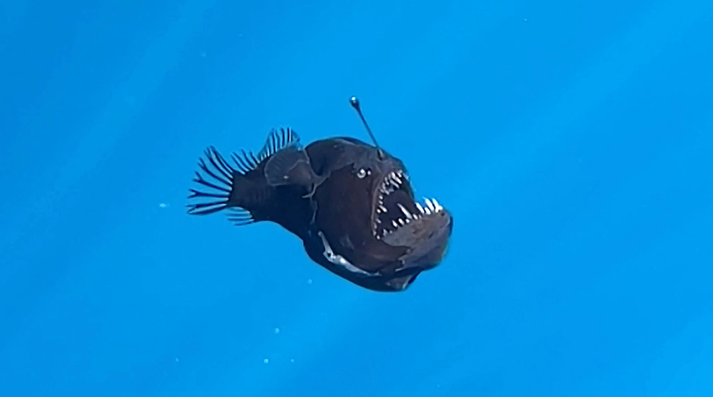

Angler fish live deep in the ocean and use a glowing lure to attract prey.
Angler fish are one of the strangest creatures in the ocean. They live in extreme darkness and pressure. They live below 1,00 feet deep in the Ocean or Sea or a Gulf.
The glowing light on their head is caused by bioluminescent bacteria. This adaptation helps them survive in the deep sea. They use it to attact there prey to eat them since food is scarse that deep.
In Febuary 2025, an Anglerfish swam towards the surface and was caught off the Coast of the Canary Islands in the Atlantic Ocean. To read more about this incident, you can click this link.